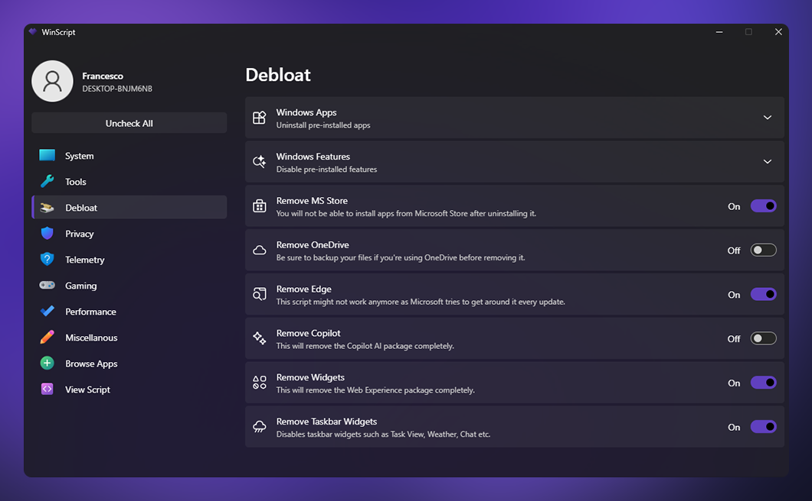
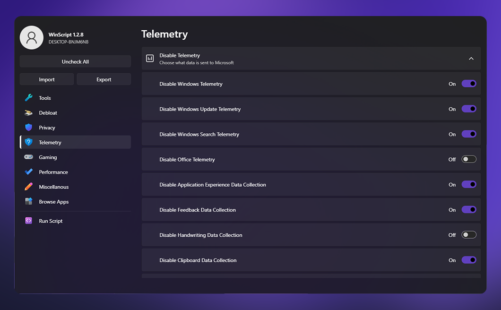
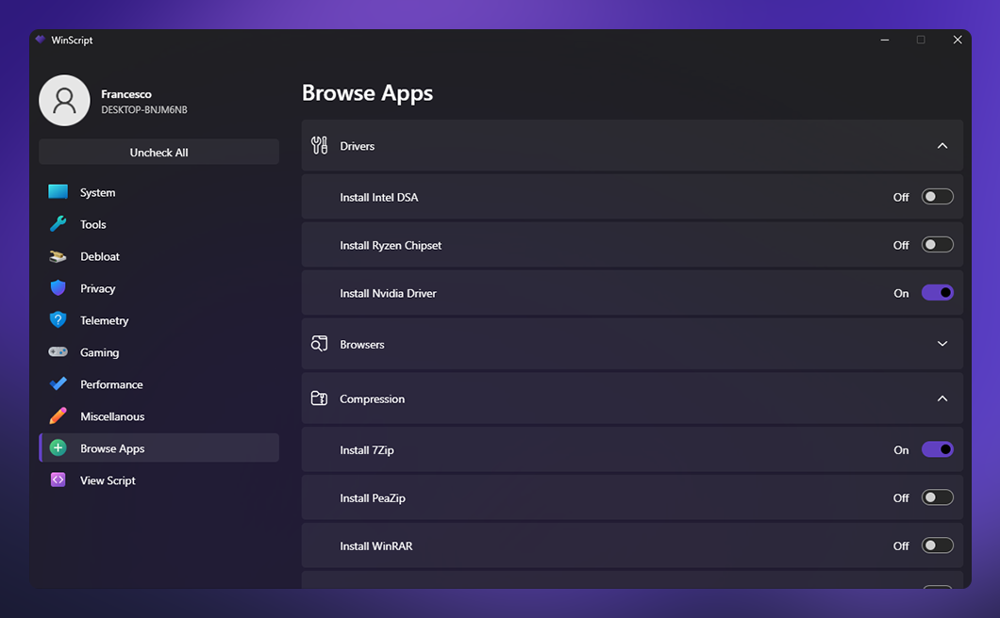

Make Windows Yours.
Open-source tool to build your Windows script from scratch.
It features debloat, privacy, performance & app installing scripts.
Open-source tool to build your
Windows script from scratch.
Latest update:
Get Started ->
Your Computer
Your Privacy
Windows collects extensive user data through telemetry, including location, browsing history, and app usage, often without clear consent, raising privacy concerns. You can improve your privacy by using WinScript, which allows you to disable telemetry and data collection.
Features
Disable Windows and 3rd party telemetry & data collection, tracking, app access & more.
Free resources by setting unnecessary background services to manual, removing telemetry & more.
Install all your favourite apps simultaneously in one click through chocolatey.
Remove
Windows
Bulls**t

Block
Windows
Spying

Boost
Windows
Performance

Install All
Your Apps
In One Click

Open Source
WinScript is an open-source project licensed under GPL-3.0. It's completely free to use and transparent. If you want to contribute, please check the contributing guide.